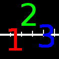
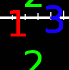
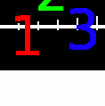
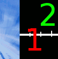
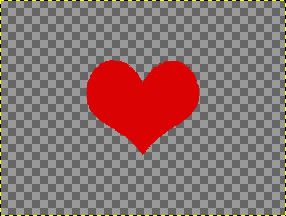
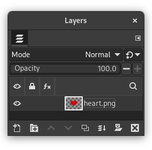
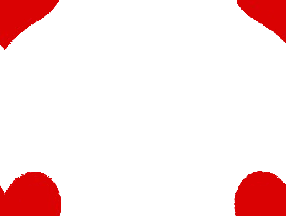
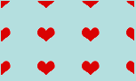

The command shifts the content of the active layer. Anything shifted outside the layer boundary is cropped. This command displays a dialog which allows you to specify how much to shift the layer and how to fill the space that is left empty by shifting it. It can be used to create tileable patterns.
![[Note]](images/note.png)
|
Note |
|---|---|
|
This command only works on a single layer. |
-
You can access this command from the main menu through → → .
-
You can also use the keyboard shortcut Shift+Ctrl+O.
- Presets, Preview, Split view
-
These options are common to GEGL-based dialogs. Please refer to Section 2, “Common Features”.
- Offset
-
- X, Y
-
With these two values, you specify how far the contents of the layer should be shifted in the horizontal (X) and vertical (Y) directions.
You can enter the offsets in the text boxes. Positive values move the layer to the right and downward. The default unit is pixels, but you can choose a different unit of measurement with the drop-down menu. A unit of “%” is sometimes useful.
You can also click-and-drag on canvas to move the layer.
- By width/2, height/2
-
With this button, you can automatically set the X and Y offsets so that the contents are shifted by exactly half the width and half the height of the image.
- By width/2
-
Same as above, but only the X offset is set to exactly half the width of the image.
- By height/2
-
Same as above, but only the Y offset is set to exactly half the height of the image.
- Edge Behavior
-
You can specify one of three ways to treat the areas left empty when the contents of the layer are shifted:
-
Wrap around: The empty space on one side of the layer is filled with the part of the layer which is shifted out of the other side, so none of the content is lost.
-
Fill with background color: The empty space is filled with the background color, which is shown in the Color Area of the Toolbox.
-
Make transparent: The empty space is made transparent. If the layer does not have an alpha channel, this choice is disabled.
-
Figure 16.113. Using “Offset” together with “Edge Behavior”

Original image

Y = -40, Edge Behavior = Wrap around

Y = -40, Edge Behavior = Fill with background color

Y = -40, Edge Behavior = Make transparent
Figure 16.114. Repeatable pattern

Original image

The Layers Dialog of the original image

Edge Behavior = Wrap around, Offset = By width/2, height/2

Create a repeated pattern via the Tile filter